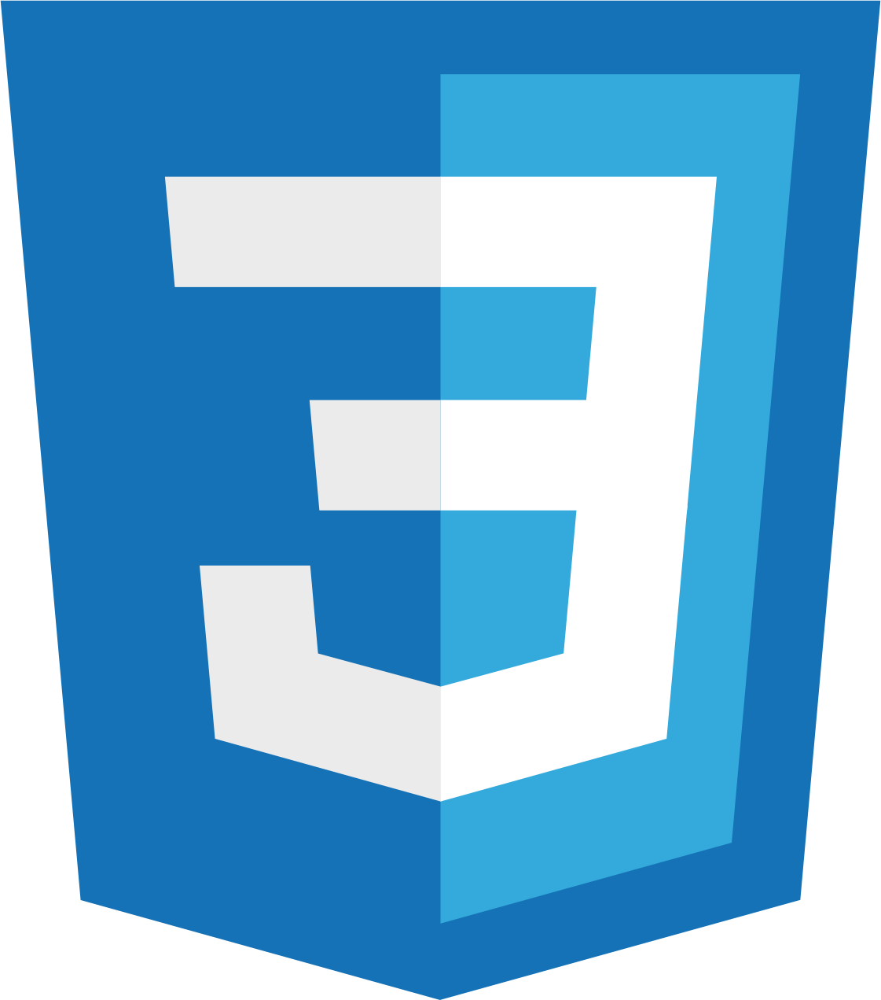
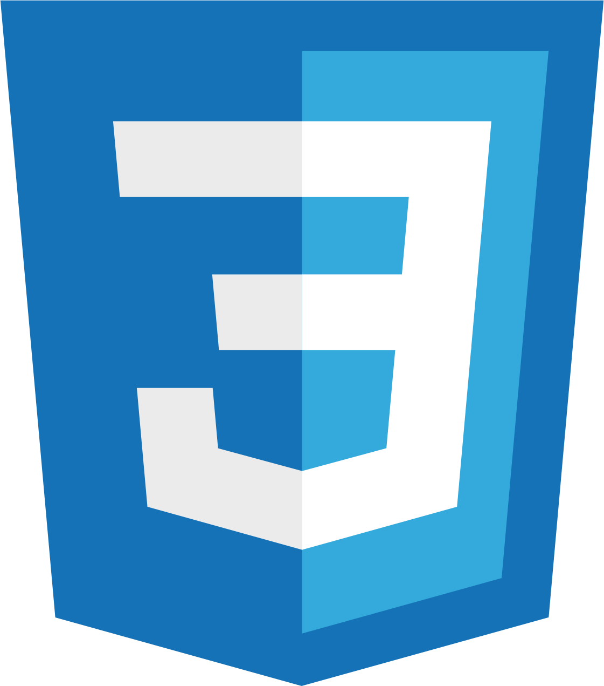

Originally from Ghana, West Africa, my journey into computer science began in my childhood. Growing up, my fascination with technology only deepened as I progressed through school.
Discovering HBO's Silicon Valley™ during my formative years ignited a passion for computer science and programming that shaped my career trajectory.
This led me to pursue my dreams in the United States, despite leaving behind the familiar.
Overcoming challenges with determination and resilience, I emerged stronger, now proud to be a Software Developer contributing to the dynamic field of technology.
Beyond my career, I enjoy exploring fashion, photography, playing video games, and spending time with loved ones.
Professional Experience
Integration Developer · Keep Supply
May 2023 - Present
Build Python scripts for seamless integration, utilizing APIs to synchronize data across systems. I optimize workflows for efficiency and scalability, collaborating in an Agile team to deliver features on time. I also liaise with stakeholders to gather requirements and troubleshoot issues, fostering effective communication and collaboration across departments.
Resident Assistant · Missouri State University
January 2020 - May 2023
Collaborated with the Residence Life Association to safely move in over 4000 residents annually, enforced University and Residence Life policies to maintain a safe living environment, and conducted over 60 mentoring meetings per year addressing academic and personal concerns.
Web Developer Intern · City of Springfield
July 2022 - September 2022
Collaborated with city managers and department heads to design and develop a modern, interactive webpage for the Diversity, Equity, and Inclusion (DEI) department.
STEM Instructor · Discovery Center of Springfield
June 2021 - August 2021
Taught approximately 150 students basic concepts in computer science, physics, mathematics, and biology while ensuring suitable learning conditions for the 'Summer of Science' program.
Selected Projects
Gesture Recognition - Capstone Project
A Python project that allows users to control their mouse using hand gestures via their camera. Utilized Machine Learning (ML) solutions like Mediapipe in training ML models for our software. Worked in a collaborative agile scrum environment to meet project requirements.
WorldFoodz
Worked in a collaborative team to create an android food recipe app. Created the app in Kotlin and utilized an international foods recipe API to provide 100+ recipes in our application.
Banking System
Developed a banking system software using Object-Oriented Programming methods and advanced data structures. Used version control and worked collaboratively to meet project requirements.